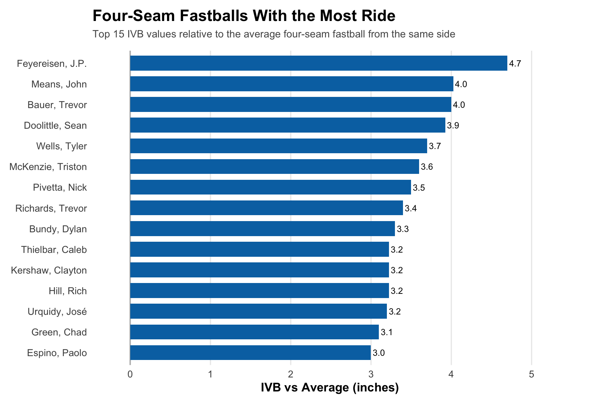
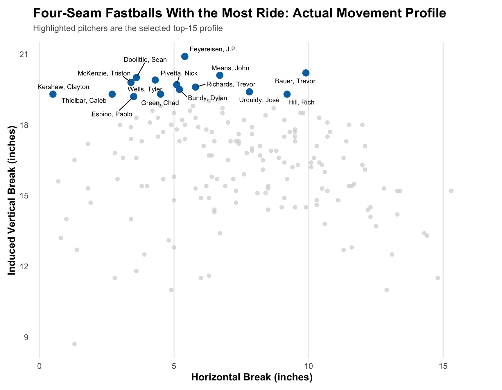
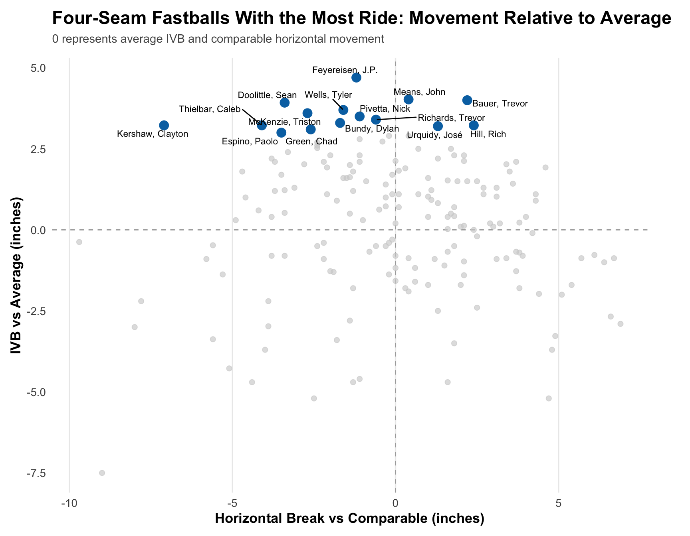
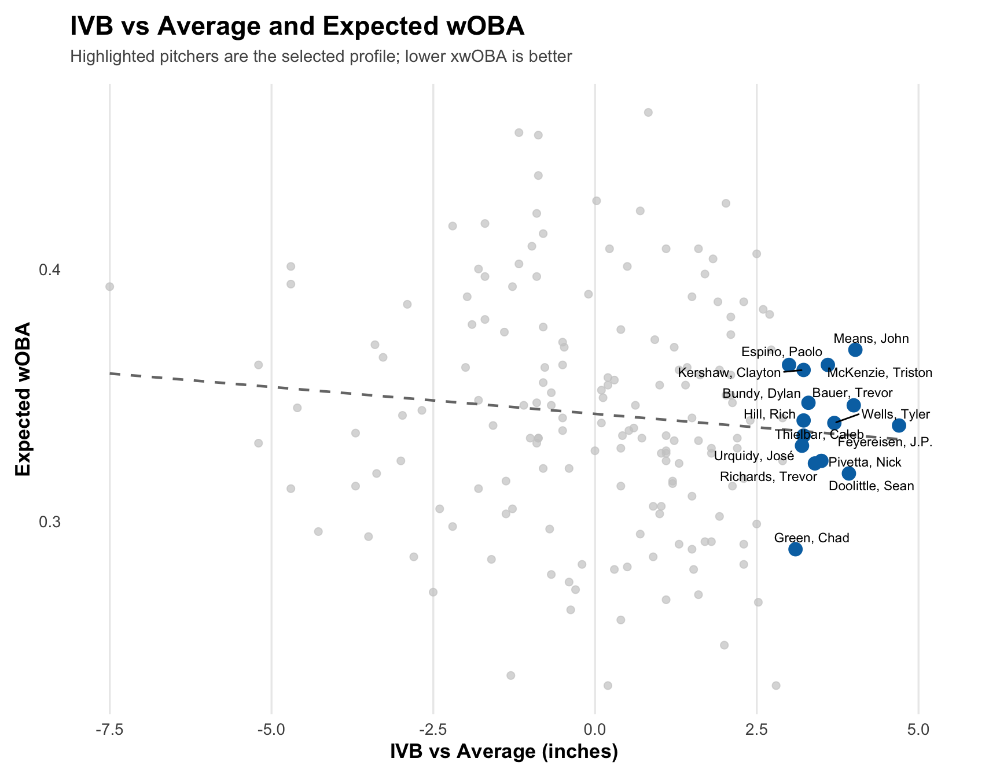
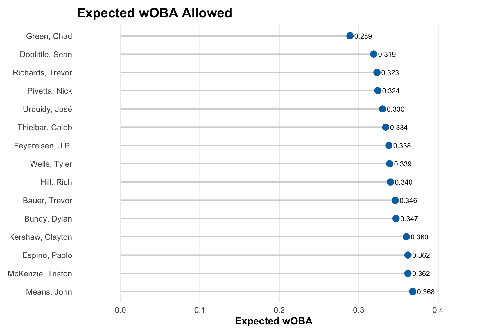
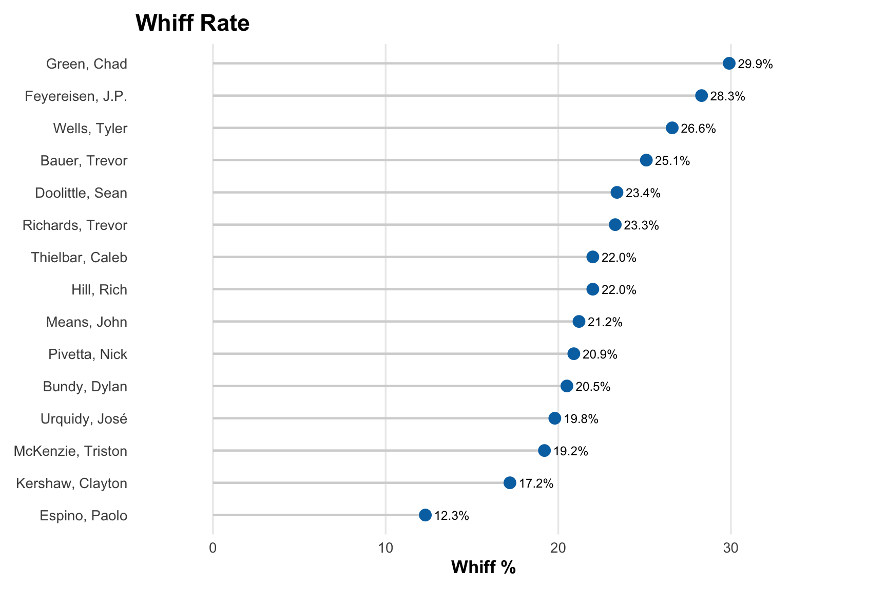
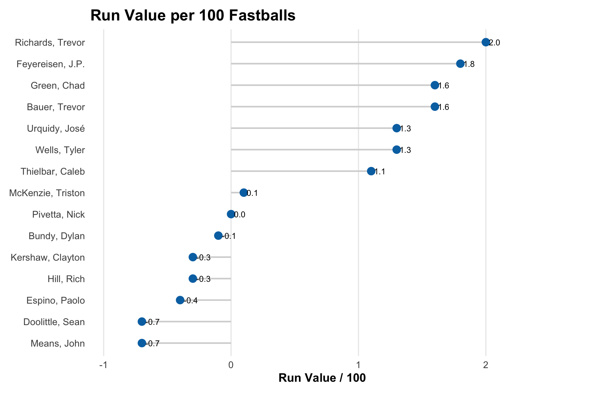
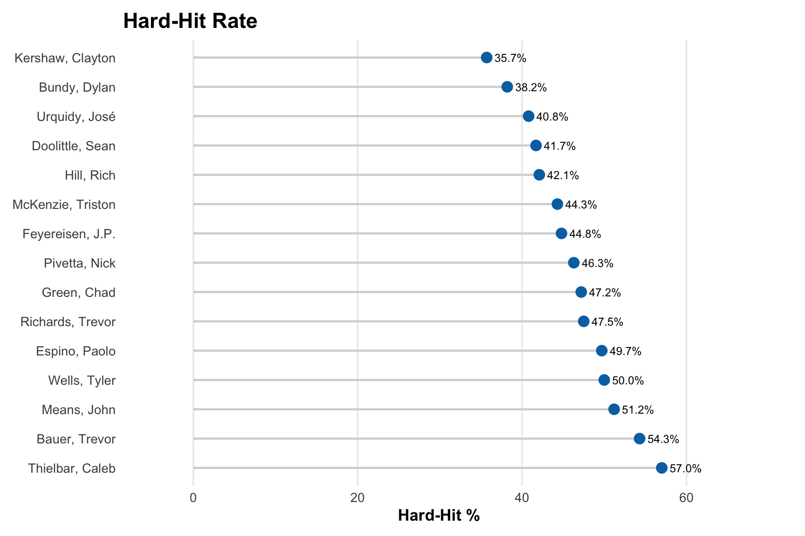

How extreme vertical movement changes the way a four-seam fastball plays.
Four-seam fastballs that resist vertical drop more than average. Ride can allow a fastball to play above its velocity by keeping the pitch above the path a hitter expects.
The idea of a “rising fastball” existed long before Statcast gave us a number for it.
Hitters and coaches have talked forever about fastballs that seem harder than the radar gun, stay above barrels, or look like they jump as they get to the plate.
The ball is not actually rising. Gravity is still pulling every pitch toward the ground. What changes is how much the fastball fights that drop.
Induced Vertical Break gives us a way to measure that. A high-IVB fastball drops less than the hitter expects. A hitter has seen thousands of fastballs and develops an expectation for where the ball should end up. When the pitch stays above that expected path, the barrel can pass underneath it.
That is ride.
It can also help a fastball play faster than its actual velocity. A 92 mph fastball with elite ride does not literally become a 97 mph fastball, but it can feel quicker because it arrives on a trajectory that is different from what the hitter expects.
This is the fastball shape I understand most personally. My own fastball was around 20 inches of IVB. I never had elite velocity, but it consistently missed barrels and generated swings and misses. Once I learned more about IVB, the idea that my fastball “played up” started to make a lot more sense.
The 15 four-seamers with the most induced vertical break relative to the average fastball from the same throwing side.
More IVB means the pitch resists gravity more effectively and stays above the trajectory a hitter expects.
Ride can create swings underneath the baseball and allow velocity to play harder than the radar gun suggests.
These 15 pitchers produced the most IVB relative to the average four-seam fastball from the same throwing side.

The ride leaderboard is a good example of why velocity does not tell the whole story.
There are not as many huge names on this list as there are on the velocity page, but that is part of what makes it interesting. J.P. Feyereisen is one of the best examples from 2021. He was not throwing 98 or 99 mph, but his four-seam fastball had around 21 inches of IVB.
That is an extreme amount of ride for that velocity.
Alex Vesia is a modern example I think of in a similar way. He shows how a fastball can be extremely effective without elite radar-gun velocity because the pitch simply does not move the way hitters expect.
At the same time, the group also shows that high IVB alone does not automatically create a dominant pitch. Ride is a weapon, but it still has to work with velocity, location, horizontal movement, deception, and the rest of the arsenal.
Raw IVB and horizontal break show what these pitches actually do. The pitchers may all rank highly in ride, but their horizontal movement creates very different overall fastball shapes.

The vertical axis is the most important part of this chart for the Ride group. The farther above zero a pitcher sits, the more IVB he creates relative to average.
The horizontal axis shows that high-ride fastballs can still run, stay relatively straight, or cut.

Ride does not describe the entire fastball.
Two pitchers can both have elite IVB while throwing completely different pitches horizontally. That is why I think looking at the full movement profile is more valuable than treating IVB as a standalone number.
The vertical movement may be what gets a pitcher onto this list, but the horizontal movement can completely change how that ride is presented to a hitter.
The fastball shape I have always found the most interesting is cut-ride.
A high-ride fastball is already difficult because it stays above the vertical path a hitter expects. If that same pitch also refuses to run arm-side, or actually moves toward the glove side relative to comparable four-seamers, the hitter is dealing with an unusual pitch in two directions at once.
Clayton Kershaw is a great example. His 2021 four-seam had roughly 19 inches of IVB while producing almost no raw horizontal break. Relative to comparable fastballs, it cut significantly.
Visually, that shape starts to share some characteristics with harder gyro-style sliders. There is very little horizontal movement, and the pitch does not follow the arm-side path hitters normally associate with a four-seam fastball.
The major difference is that the fastball is still carrying close to 20 inches of vertical ride.
A pitch with that much ride and almost no horizontal break can stay above the barrel while also refusing to move horizontally the way a hitter expects a four-seamer to move.
Feyereisen showed some of the same cut-ride characteristics in 2021.
Kershaw is the more recognizable example, and seeing him stand out in both the Ride and Cut groups makes sense. His career was built around unusual pitch shapes, elite command, and pitches that complemented one another extremely well.
Feyereisen is one of the best examples of why IVB matters. His fastball did not have elite velocity, but it sat at the very top of the ride leaderboard.
The pitch created an extreme vertical shape without needing 98 or 99 mph to do it.
Kershaw combined elite ride with almost no raw horizontal break. Instead of following the traditional arm-side movement of a four-seamer, the pitch stayed vertically while cutting relative to comparable fastballs.
That combination gives the hitter an unusual shape in both directions.
Comparing IVB relative to average with expected wOBA shows whether additional ride consistently translated into better results across the qualified group.

The Ride group performs well overall, but the results are not as simple as “more ride equals a better fastball.”
Some of the highest-IVB pitches generate elite whiff rates, while others are much closer to average. That tells me ride should be viewed as one part of the pitch rather than a guarantee of success.
What it does show is that a pitcher does not necessarily need elite velocity to have an unusual or effective fastball. If the pitch lives on a trajectory hitters are not used to seeing, that movement can create its own advantage.
Lower xwOBA shows which high-ride fastballs were best at limiting expected offensive production.

Ride is commonly associated with getting the fastball above the barrel. Whiff rate shows which pitchers actually converted that shape into swings and misses.

Run Value per 100 shows which pitchers turned their high-IVB shape into overall pitch value.

A pitch does not have to generate a whiff to be effective. Hard-Hit Rate shows whether the Ride group also prevented hitters from consistently squaring the baseball up.

Ride gives a pitcher something that velocity alone cannot: a different path to the plate.
That is why I think it is one of the most valuable characteristics a lower-velocity pitcher can have. The hitter still has to cover the same distance in roughly the same amount of time, but the baseball does not arrive where the hitter’s previous experience tells him it should.
At the same time, the spread in results makes it clear that IVB cannot be evaluated in isolation. The best versions of the pitch combine ride with other advantages — velocity, cut, deception, command, or an arsenal that forces the hitter to protect against a completely different movement profile.
The group average provides a simple comparison between the 15 highest-ride fastballs and the qualified four-seam population as a whole.
| Group | xwOBA | Whiff % | RV/100 | Hard-Hit % | xSLG | K % | Put-Away % |
|---|---|---|---|---|---|---|---|
| Qualified Four-Seam Average | 0.342 | 22.5% | 0.14 | 44.6% | 0.460 | 22.9% | 19.1% |
| Top 15 Ride Fastballs | 0.339 | 22.1% | 0.55 | 46.1% | 0.474 | 21.9% | 18.8% |
IVB identifies the vertical characteristic that makes these pitches unusual, but the complete profiles show how much variation still exists inside the group.
Some high-ride fastballs rely almost entirely on vertical movement. Others combine ride with velocity, run, or cut. The most effective pitches are rarely defined by only one number.
| Rank | Pitcher | Hand | Velo | IVB | IVB vs Avg | HB | HB vs Comparable | xwOBA | Whiff % | RV/100 | Hard-Hit % | xSLG | Usage % |
|---|---|---|---|---|---|---|---|---|---|---|---|---|---|
| 1 | Feyereisen, J.P. | R | 93.1 | 20.9 | 4.7 | 5.4 | -1.2 | 0.338 | 28.3% | 1.8 | 44.8% | 0.401 | 51.5% |
| 2 | Means, John | L | 92.8 | 20.1 | 4.0 | 6.7 | 0.4 | 0.368 | 21.2% | -0.7 | 51.2% | 0.567 | 47.9% |
| 3 | Bauer, Trevor | R | 93.9 | 20.2 | 4.0 | 9.9 | 2.2 | 0.346 | 25.1% | 1.6 | 54.3% | 0.490 | 40.1% |
| 4 | Doolittle, Sean | L | 93.1 | 20.0 | 3.9 | 3.6 | -3.4 | 0.319 | 23.4% | -0.7 | 41.7% | 0.425 | 81.1% |
| 5 | Wells, Tyler | R | 95.2 | 19.9 | 3.7 | 4.3 | -1.6 | 0.339 | 26.6% | 1.3 | 50% | 0.501 | 58.6% |
| 6 | McKenzie, Triston | R | 92.1 | 19.8 | 3.6 | 3.4 | -2.7 | 0.362 | 19.2% | 0.1 | 44.3% | 0.472 | 61.7% |
| 7 | Pivetta, Nick | R | 94.8 | 19.7 | 3.5 | 5.1 | -1.1 | 0.324 | 20.9% | 0.0 | 46.3% | 0.416 | 51.8% |
| 8 | Richards, Trevor | R | 92.7 | 19.6 | 3.4 | 5.8 | -0.6 | 0.323 | 23.3% | 2.0 | 47.5% | 0.459 | 56.7% |
| 9 | Bundy, Dylan | R | 90.7 | 19.5 | 3.3 | 5.2 | -1.7 | 0.347 | 20.5% | -0.1 | 38.2% | 0.450 | 34.2% |
| 10 | Hill, Rich | L | 88.1 | 19.3 | 3.2 | 9.2 | 2.4 | 0.340 | 22% | -0.3 | 42.1% | 0.486 | 47.1% |
| 11 | Kershaw, Clayton | L | 90.6 | 19.3 | 3.2 | 0.5 | -7.1 | 0.360 | 17.2% | -0.3 | 35.7% | 0.478 | 36.8% |
| 12 | Thielbar, Caleb | L | 91.3 | 19.3 | 3.2 | 2.7 | -4.1 | 0.334 | 22% | 1.1 | 57% | 0.515 | 49% |
| 13 | Urquidy, José | R | 92.5 | 19.4 | 3.2 | 7.8 | 1.3 | 0.330 | 19.8% | 1.3 | 40.8% | 0.493 | 54.9% |
| 14 | Green, Chad | R | 95.7 | 19.3 | 3.1 | 4.5 | -2.6 | 0.289 | 29.9% | 1.6 | 47.2% | 0.417 | 65% |
| 15 | Espino, Paolo | R | 89.0 | 19.2 | 3.0 | 3.5 | -3.5 | 0.362 | 12.3% | -0.4 | 49.7% | 0.542 | 55.2% |